2.4 Solutions to Exercises
2.4.1 Exercise 1: UBS stock returns
- Create a function that fits an AR(1)-ARCH(1) model by modifying the code provided above and apply it to
y. - Obtain the maximum likelihood estimates using
nlmoroptimas well as the standard errors - Make a residual plot. Comment on the fit using standard diagnostic plots (Q-Q plot, ((P)ACF, cumulative periodogram).
- Fit an AR(2) model using a conditional likelihood for the mean and obtain the standard errors of your estimated coefficients.
- Perform a likelihood ratio test to test whether the AR(2) coefficient is significative.
library(xts)
UBSCreditSuisse <- read.csv("http://sma.epfl.ch/~lbelzile/math342/UBSCSG.csv",
stringsAsFactors = FALSE)
UBS <- ts(UBSCreditSuisse$UBS_LAST, start = c(2000, 1), frequency = 365.25)
UBS <- ts(UBS[!is.na(UBS)], start = c(2000, 1), frequency = 251.625)
UBS.ret <- 100 * diff(log(UBS))
y <- window(UBS.ret, end = c(2003, 100))
y <- ts(y[-1])
# analysis using AR(1) model for means and ARCH(1) model for variances
nll_AR1_ARCH1 <- function(th, y) {
n <- length(y)
condit.mean <- th[1] + th[4] * (y[-n] - th[1])
condit.var <- th[2] * (1 + th[3] * (y[-n] - th[1])^2)
-sum(dnorm(y[-1], mean = condit.mean, sd = sqrt(condit.var), log = TRUE))
}
init3 <- c(0, 1, 0.5, 0)
fit3 <- nlm(f = nll_AR1_ARCH1, p = init3, iterlim = 500, hessian = TRUE, y = y)
fit3$minimum[1] 1857.097fit3$estimate[1] 0.03565563 3.30958227 0.11649056 0.08343614sqrt(diag(solve(fit3$hessian)))[1] 0.07233704 0.24657510 0.02891288 0.04476770make_resid_AR1_ARCH1 <- function(y, fit) {
th <- fit$estimate
n <- length(y)
condit.mean <- th[1] + th[4] * (y[-n] - th[1])
condit.var <- th[2] * (1 + th[3] * (y[-n] - th[1])^2)
res <- (y[-1] - condit.mean)/sqrt(condit.var)
ts(res)
}
res3 <- make_resid_AR1_ARCH1(y, fit3)
par(mfrow = c(2, 2))
plot(res3, ylab = "Residuals", main = "Residuals of AR(1)-ARCH(1)")
cpgram(res3, main = "Cumulative periodogram")
TSA::acf(res3, main = "Correlogram of residuals")
pacf(res3, main = "Partial correlogram\n of residuals")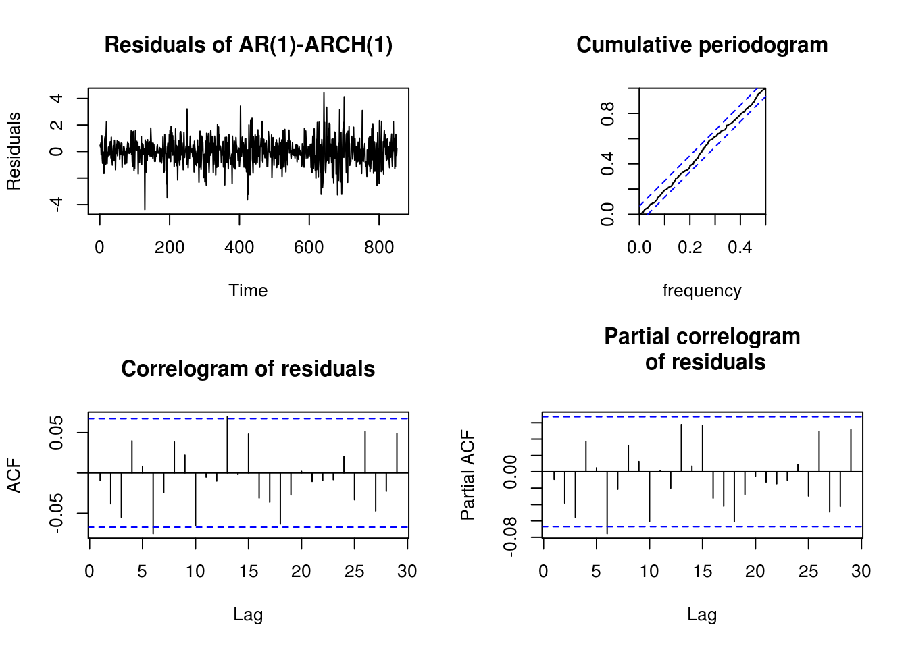
par(pty = "s", mfrow = c(1, 1))
qqnorm(res3, panel.first = {
abline(0, 1, col = "red")
})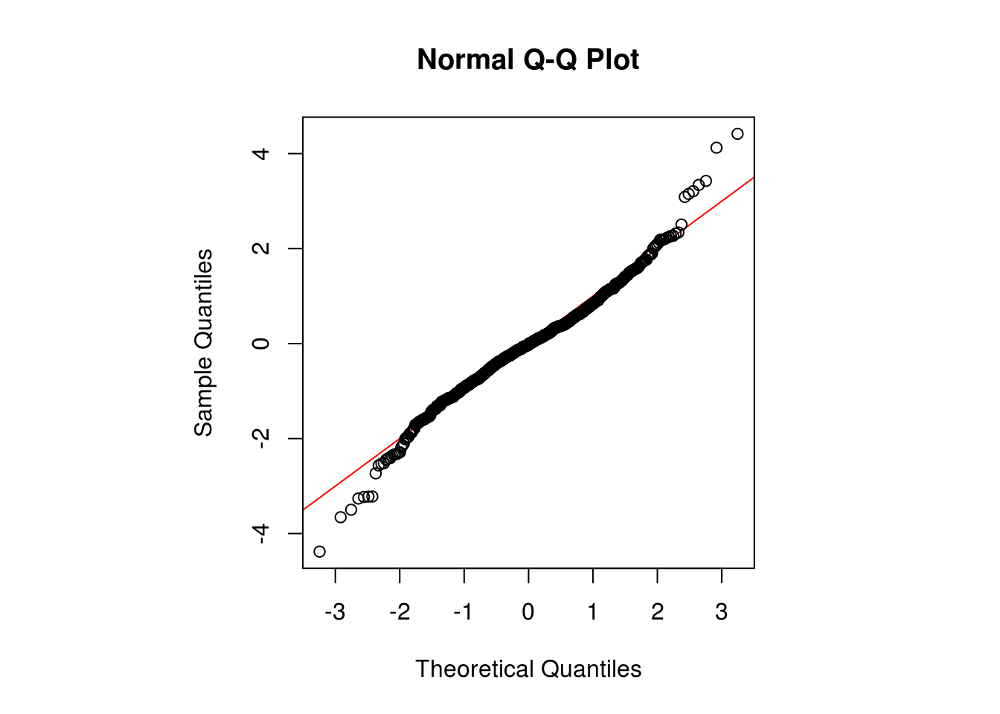
# MLE for the AR(p) using OLS formulation
ARpmle <- function(y, p) {
dynlm::dynlm(y ~ L(y, 1:p))
}
# If you do it manually with lag, watch out to use lag(y, -1) and NOT lag(y,
# 1) P-value for the likelihood ratio test
llr <- 2 * (logLik(dynlm::dynlm(y ~ L(y, 1:2)))[1] - logLik(dynlm::dynlm(y ~
L(y, 1), start = 3))[1])
# Fail to reject the null that the simpler model is adequate.
1 - pchisq(llr, df = 1)[1] 0.12304652.4.2 Exercise 2: Simulated series
Warning The following output is unformatted and rather sketchy, but should illustrate development to find an adequate model
- The
Simulated_ARMAdataset contains 8 time series (these examples are from Charlotte Wickham’s website). Fit ARMA models to those and select a model, justifying your choice. Be skeptical of the optimization routine and analyze the models carefully.
library(forecast)
library(astsa)
load(url("http://sma.epfl.ch/~lbelzile/math342/Simulated_ARMA.RData"))
plot(x1)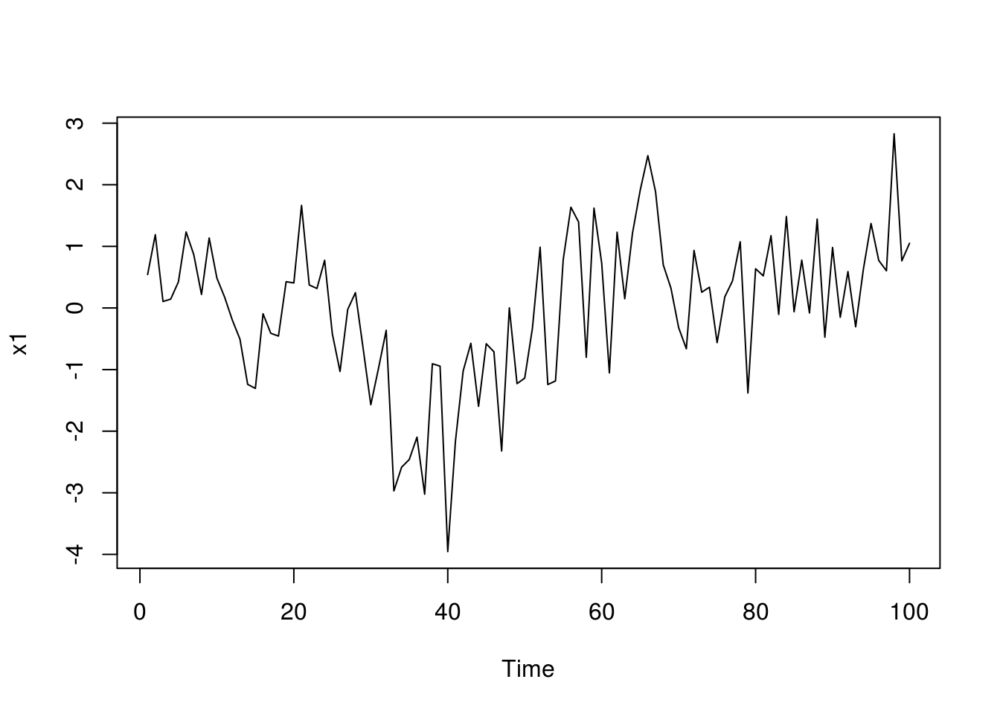
The first series, \(x_1\) has a visible trend and may not be stationary, even if the series looks like Gaussian. After first differencing (setting the component \(d=1\) corresponds to first differencing), one could think that an AR(2) model is appropriate by looking at the ACF/PACF. Even a simple MA(1) will do the job here, and it is more parsimonious.
For the second, a simple MA(1) model also is sufficient for removing the linear autocorrelation.
myacf2 <- function(x) {
invisible(capture.output(astsa::acf2(x)))
}
myacf2(x1)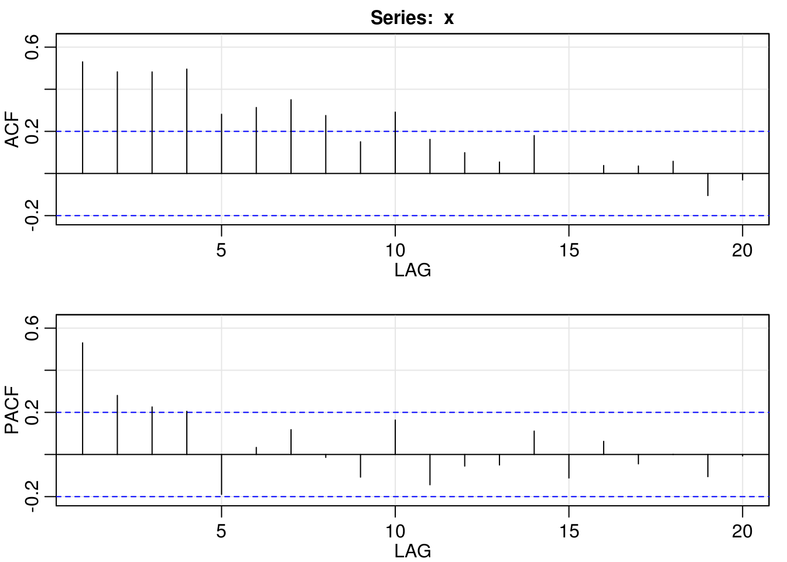
myacf2(diff(x1))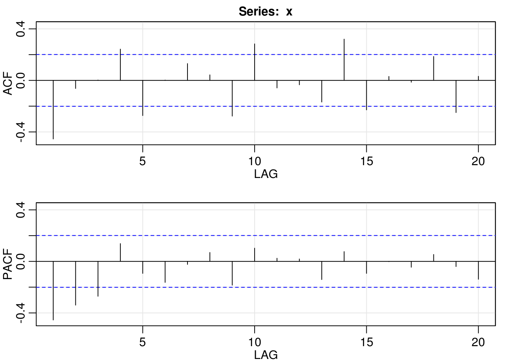
arima_1_011 <- Arima(x1, order = c(0, 1, 1))
arima_1_210 <- Arima(x1, order = c(2, 1, 0))
myacf2(resid(arima_1_011))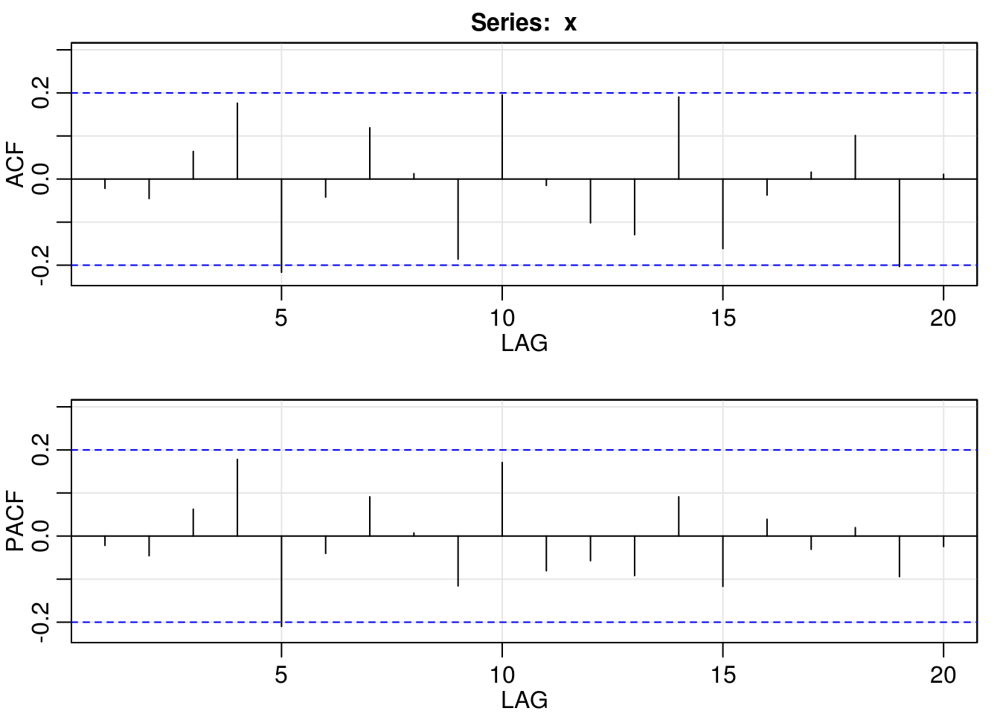
myacf2(resid(arima_1_210))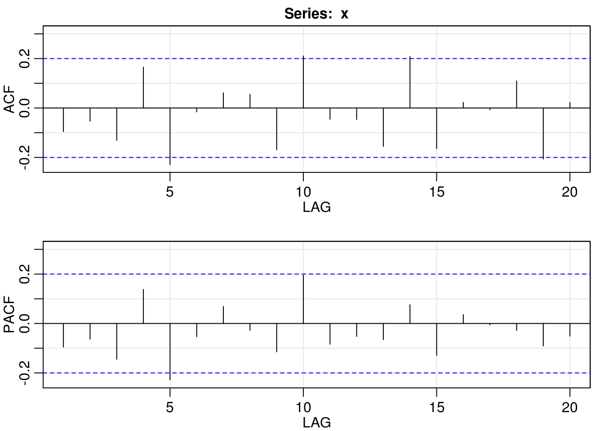
BIC(arima_1_011)[1] 283.7835BIC(arima_1_210)[1] 291.6321AIC(arima_1_011)[1] 278.5933AIC(arima_1_210)[1] 283.8468plot(x2)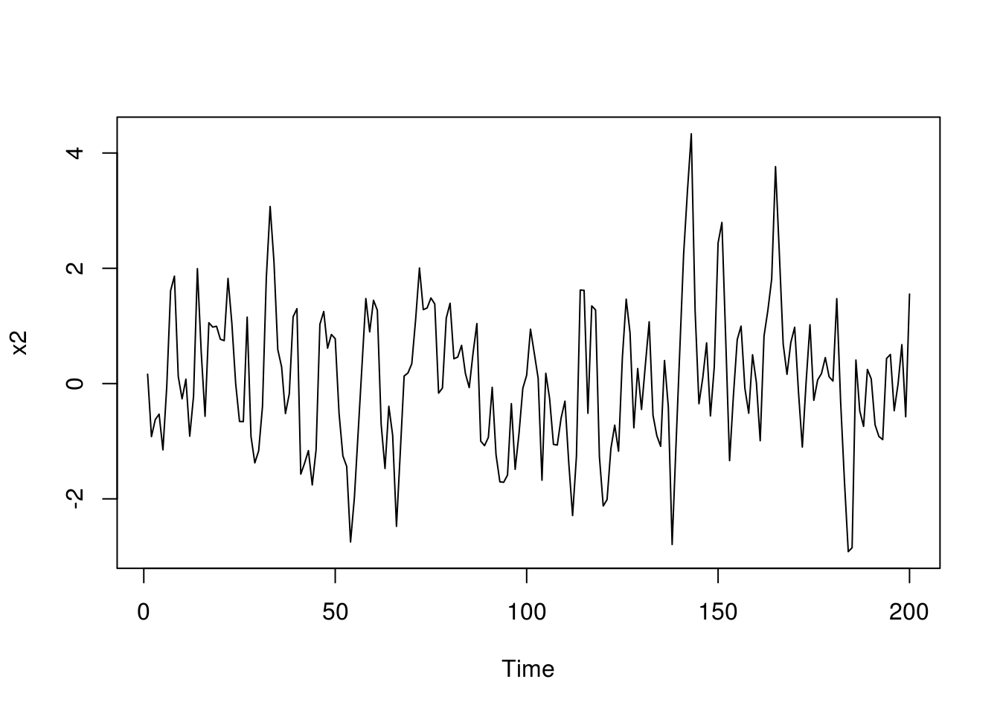
myacf2(x2)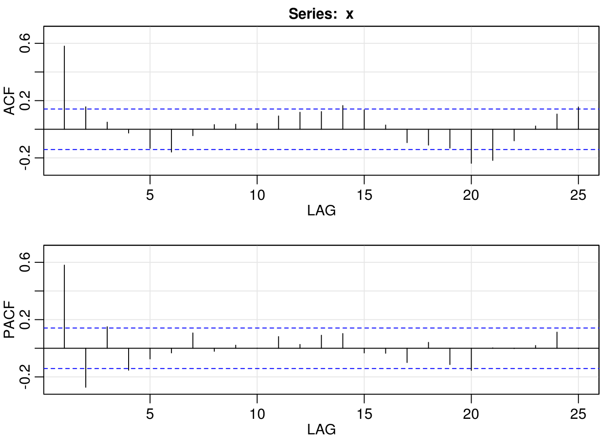
arima_2_001 <- Arima(x2, order = c(0, 0, 1))
myacf2(resid(arima_2_001))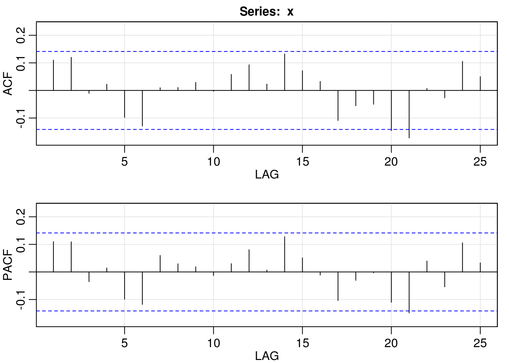
The third series \(x_3\) is difficult. Indeed, there is a trend in the data (or else non-stationarity that requires differencing). If only autoregressive components are included, they fail to capture the structure adequatly. If only one MA component is included, the process is often estimated to be non-invertible. This excludes the ARMA(1,1), moany differenced series whose MA polynomial has order 1 such as the ARMA(0,1) and ARMA(1,1). An ARMA(1,2) or an ARMA(2,1) with a trend fits the data appropriately, or else an ARMA(2,1) for the differenced series.
\(x_4\) likely corresponds to an AR(1) process and is fairly obvious from the plot of the PACF and the oscillation in the correlogram. The series in \(x_5\) seem to have exhibit some heteroscedasticity. If we take first difference, we get a partial correlogram that is reminiscent of AR(1). As in many cases, a MA(1) with a negative component fits equally well.
As mentionned before, the following is rather rough output and is not formatted (graphs have no labels, etc.) It does however shows the sort of workflow: start from simple and build up more complicated models. You can work out for yourself the most likely data generating processes of \(x_6\), \(x_7\) and \(x_8\).
# Here, evidence trend or nonstationarity
plot(x3)
myacf2(x3)
# with trend
arima_3_101trend <- Arima(x3, order = c(1, 0, 1))
arima_3_200trend <- Arima(x3, order = c(2, 0, 0))
arima_3_300trend <- Arima(x3, order = c(3, 0, 0))
arima_3_201trend <- Arima(x3, order = c(2, 0, 1))
arima_3_102trend <- Arima(x3, order = c(1, 0, 2))
# after differencing
arima_3_011 <- Arima(x3, order = c(0, 1, 1))
arima_3_111 <- Arima(x3, order = c(1, 1, 1))
arima_3_211 <- Arima(x3, order = c(2, 1, 1))
# ARIMA models are not invertible
plot(arima_3_101trend)
plot(arima_3_011)
plot(arima_3_111)
plot(arima_3_211) #still on the boundary
# AR2 model still has some structure
myacf2(resid(arima_3_200trend))
myacf2(resid(arima_3_300trend))
# ARMA(2,1) is okay, but not invertible
myacf2(resid(arima_3_201trend))
plot(arima_3_201trend)
# Could also difference ARMA(2,1) is okay if trend, so is first differenced
# ARMA(1,1) or ARIMA(0,1,1)
myacf2(resid(arima_3_011))2.4.3 Exercise 3: Lake Erie height
- Perform an additive decomposition of the form \[Y_t = m_t + s_t + Z_t\] where \(m_t\) is the trend and \(s_t\) is a seasonal component of the Lake Erie height series, found at http://sma.epfl.ch/~lbelzile/math342/LakeErie.csv. Characterize the stochastic component \(Z_t\) using an ARMA model.
- Obtain a table of AIC and BIC values for ARMA(\(p, q\)) model for order 7 and less. Anything worth of notice?
- Justifying your answer, select an adequate ARMA model. Are the residuals from this model white noise?
- Look at the fitted model and check for invertibility and causality of your solution.
- Plot the (partial) correlogram of \(Z_t\) and superpose the theoretical coefficients implied by your model.
- Plot the correlogram of the residuals of your ARMA model. Do they appear white noise?
- Perform a Ljung-Box test on the residuals. What can you conclude?
library(forecast)
lake <- read.csv("http://sma.epfl.ch/~lbelzile/math342/LakeErie.csv", header = TRUE,
stringsAsFactors = FALSE, sep = ";")
lake.ts <- ts(lake[, 2], start = c(1920, 1), frequency = 12)
plot(lake.ts, ylab = "Height (in m)", main = "Height of Lake Erie")
lake.lowess <- lowess(lake[, 2])
lines(as.vector(time(lake.ts)), lake.lowess$y, col = 2)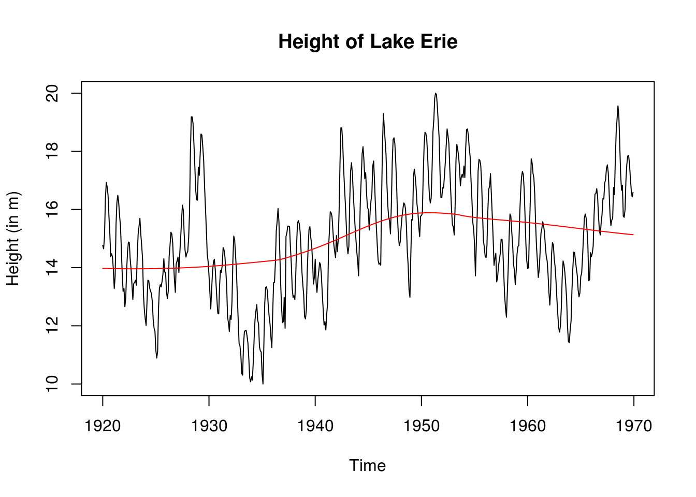
detrended <- decompose(lake.ts)
plot(decompose(lake.ts))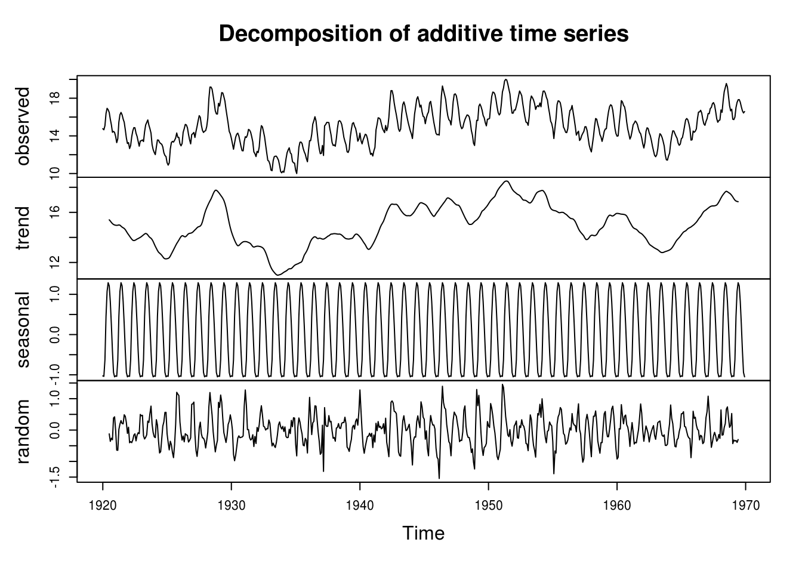
It is clear from the picture that the series exhibit a strong yearly variation, which should be taken into account. The trend decomposition seems somewhat more arbitrary. After deaseasonalizing, it appears that there may be a structural break around 1950, from which the trend onward for the lake level is decreasing linearly. This could be assesed formally by e.g. a Chow test; instead, to deal with this, we use a non-parametric polynomial fit to remove the (nonlinear) trend and demean the data before attempting to use an ARMA model on the residuals. Thus, we are taking the original series \(X_t\) and decompose it into \[X_t=m_t+s_t+Y_t\] where plausibly \(Y_t \sim \mathrm{ARMA}(p,q)\).
# plot(stl(lake.ts, s.window='periodic'))
lake.detrended <- ts(lake[, 2] - lake.lowess$y - detrended$seasonal, start = c(1921,
1), frequency = 12)
plot(lake.detrended, ylab = "")
title("Detrended and deseasonalized height variation")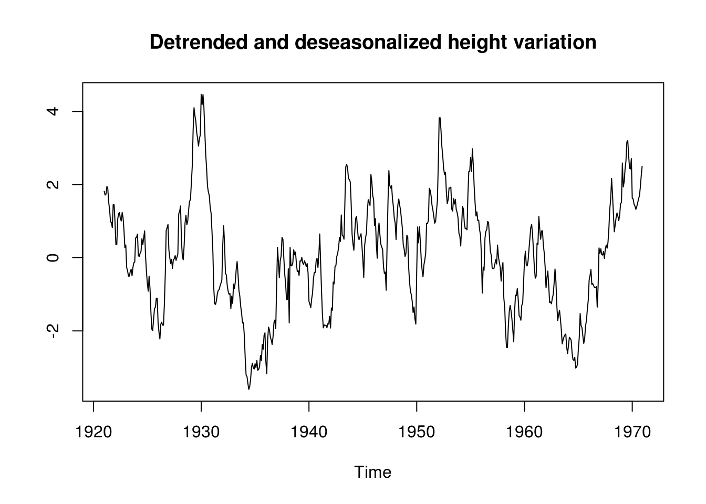
par(mfrow = c(1, 2))
TSA::acf(lake.detrended, main = "Lake Erie detrended series", lag.max = 30)
pacf(lake.detrended, main = "Lake Erie detrended series", lag.max = 30)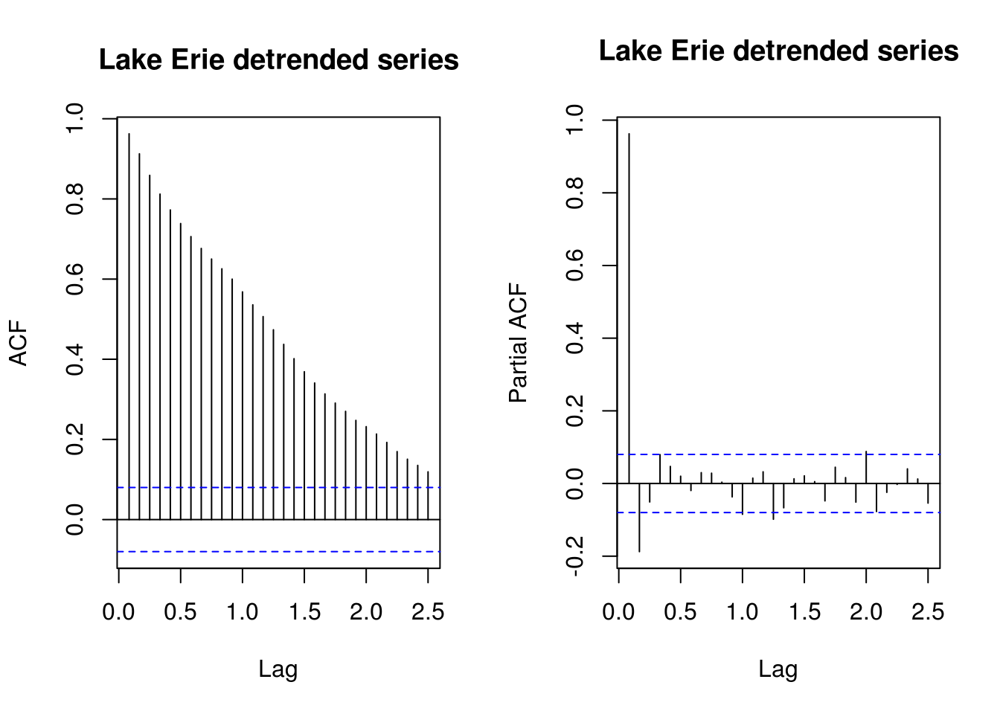
It is apparent from the observation of the ACF that there is remaining structure for the data. We attempt to model this using an ARMA model, using the BIC and the AICc, respectively the Bayesian and bias-corrected information criterion for the data, as guiding mesure of data complexity. The selection yields an AR(2) as privilegied model with the BIC and the AICc and the somewhat more complex ARMA(6,4) from AIC.
AIC.vals <- AICc.vals <- BIC.vals <- matrix(0, 8, 8)
N <- length(lake.detrended)
for (p in 0:7) {
for (q in 0:7) {
f <- Arima(lake.detrended, order = c(p, 0, q), include.mean = FALSE,
method = "ML", optim.control = list(maxit = 1000))
# Defn of AICc is a correction of (2*(p+q)*(p+q+1))/(N-p-q-2) from AIC
AIC.vals[p + 1, q + 1] <- f$aic
AICc.vals[p + 1, q + 1] <- f$aic + (2 * (p + q + 2) * (p + q + 1))/(N -
p - q - 2) #or f$aicc
BIC.vals[p + 1, q + 1] <- BIC(f) #or f$bic
# also AIC(arima(..., k=log(length(lake.detrended)))) for the BIC
}
}The ARMA(6, 4) model has smallest \(\mathrm{AIC}\), the ARMA(2, 0) model has smallest \(\mathrm{BIC}\) and ARMA(6, 4) model has smallest \(\mathrm{AIC}_{\mathrm{c}}\) The PACF here would have provided rough guidelines indicating that an AR(2) was indeed appropriate. Let us compare the two models.
# Model selection with deaseasonalized-detrended series ARMA(6,4) from AIC
# and AICc; AR(2) from BIC Model selected through BIC
ar2 <- Arima(lake.detrended, order = c(2, 0, 0), include.mean = FALSE, optim.control = list(maxit = 1000))
TSA::acf(residuals(ar2), main = "Correlogram of the AR(2) residuals", ylab = "ACF")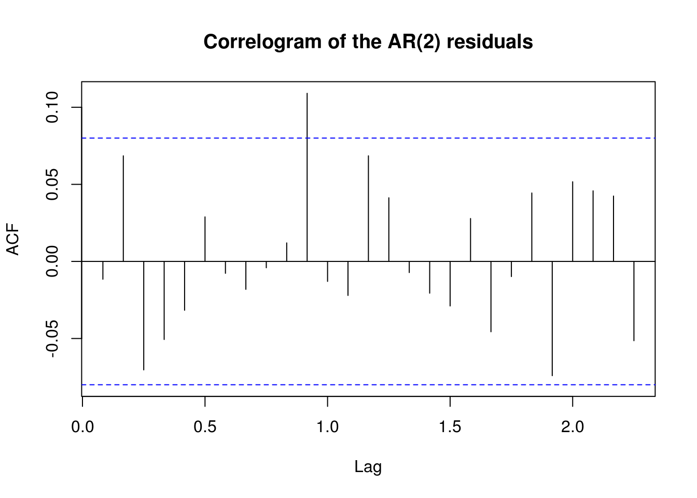
plot(residuals(ar2), main = "AR(2) residuals for the detrended-deseasonalized series",
ylab = "Detrended residuals")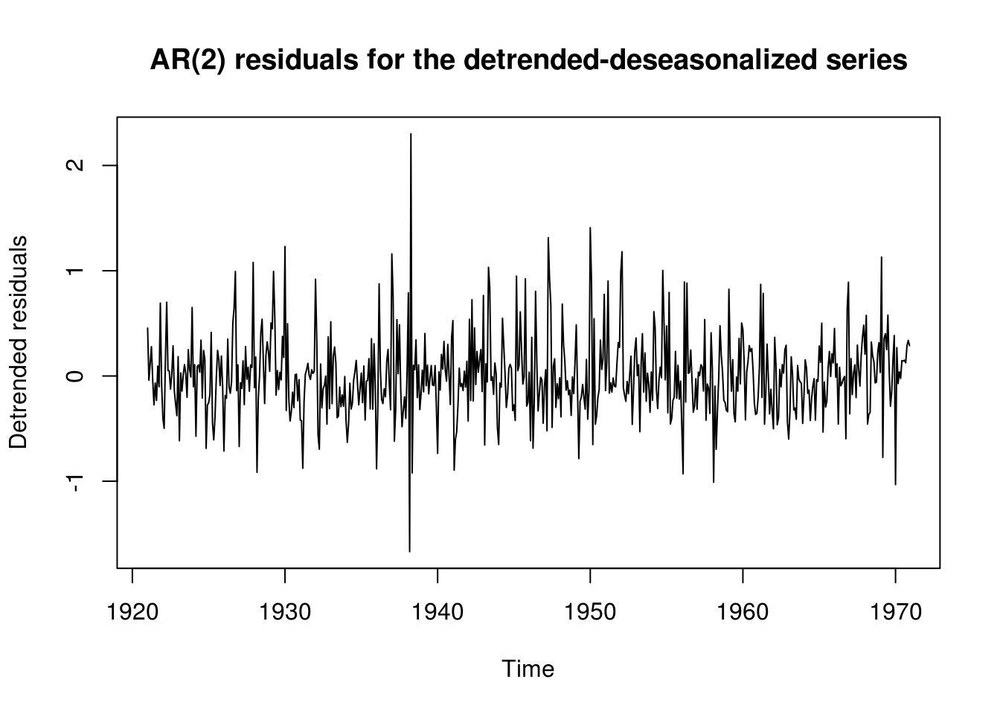
summary(ar2)Series: lake.detrended
ARIMA(2,0,0) with zero mean
Coefficients:
ar1 ar2
1.1692 -0.2095
s.e. 0.0399 0.0400
sigma^2 estimated as 0.1549: log likelihood=-292.28
AIC=590.57 AICc=590.61 BIC=603.76
Training set error measures:
ME RMSE MAE MPE MAPE MASE
Training set 0.003821393 0.3929215 0.2848819 22.00608 91.12439 0.2483707
ACF1
Training set -0.01154223ar2.acf.fit <- ARMAacf(ar = ar2$coef[1:2], lag.max = 30)
Mod(polyroot(c(1, -ar2$coef[grep("^ar", names(ar2$coef))])))[1] 1.054612 4.525466# Model selected through AIC and AICC
arma64 <- arima(lake.detrended, order = c(6, 0, 4), include.mean = FALSE, optim.control = list(maxit = 1000))
arma64.par <- arma64$coef
summary(arma64)
Call:
arima(x = lake.detrended, order = c(6, 0, 4), include.mean = FALSE, optim.control = list(maxit = 1000))
Coefficients:
ar1 ar2 ar3 ar4 ar5 ar6 ma1 ma2
0.9479 -1.5285 1.6102 -0.8386 0.7140 -0.0511 0.2146 1.6741
s.e. 0.1506 0.2185 0.1873 0.2321 0.1657 0.0522 0.1430 0.0788
ma3 ma4
0.1281 0.7901
s.e. 0.1178 0.1036
sigma^2 estimated as 0.1477: log likelihood = -279.62, aic = 581.24
Training set error measures:
ME RMSE MAE MPE MAPE MASE
Training set 0.003804229 0.3842917 0.2821519 20.0979 97.20178 0.9433899
ACF1
Training set -0.0003748186arma64.acf.fit <- ARMAacf(ar = arma64.par[1:6], ma = arma64.par[7:10], lag.max = 30)
Mod(polyroot(c(1, -arma64$coef[grep("^ar", names(arma64$coef))])))[1] 1.050757 1.013319 1.013319 1.186975 1.186975 12.866561Mod(polyroot(c(1, arma64$coef[grep("^ma", names(arma64$coef))])))[1] 1.115831 1.008236 1.008236 1.115831Here, the estimate from arima for the ARMA(6,4) did not adjust the AR coefficients. The process is barely causal, as some roots are close to the unit circle – it would be advisable to differentiate the series. It is also barely invertible, as one of the roots is transformed to 1.
par(mfrow = c(1, 2))
TSA::acf(lake.detrended, lag.max = 30, main = "ACF of Residuals \n with fitted AR(2)")
points(seq(0, 2.5, length.out = 31), ar2.acf.fit, pch = 19)
TSA::acf(lake.detrended, lag.max = 30, main = "ACF of Residuals \n with fitted ARMA(6,4)")
points(seq(0, 2.5, length.out = 31), arma64.acf.fit)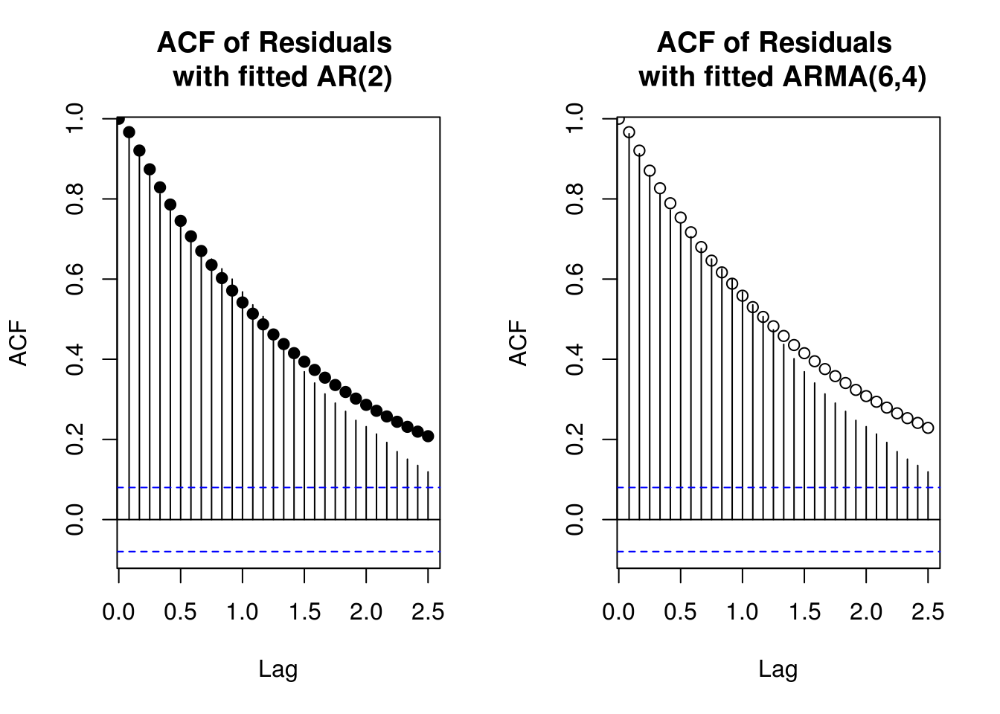
# Plot of the residuals of the series
par(mfrow = c(1, 1))
plot(ts(residuals(arma64), start = c(1921, 1), frequency = 12), ylab = "Residuals",
sub = "ARMA(6,4) vs AR(2) models", col = 2)
lines(ts(residuals(ar2), start = c(1921, 1), frequency = 12), ylab = "Residuals",
col = 4)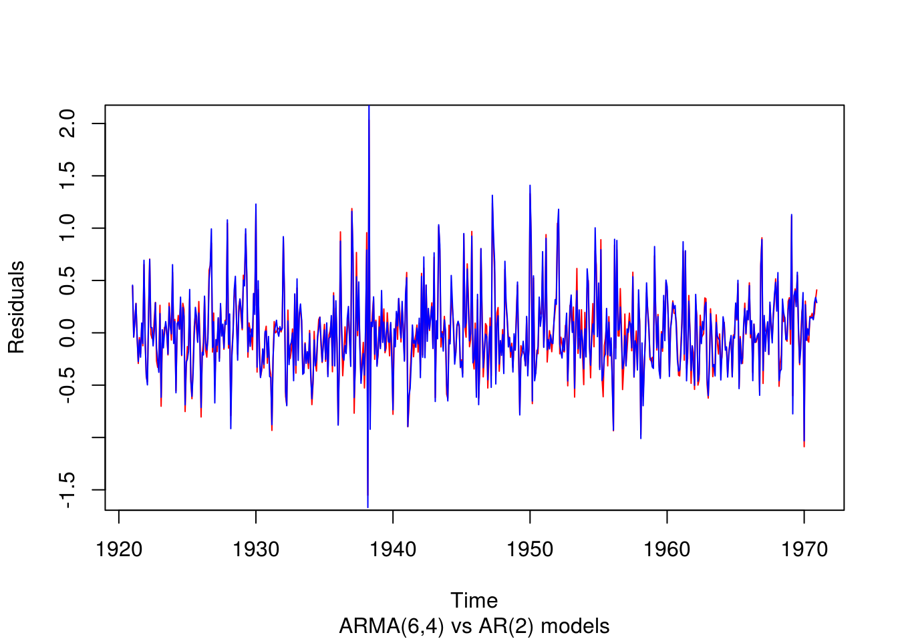
The ARMA(6,4) regression model has lower variance, but it is rather clear that it won’t be the most parsimonious (and the forecasting performances could have been worst, but here there is little difference).
# Ljunx-Box test for independence of residuals, proposed 22 lags frame
# suggested by B&D Adjusting for the number of parameters in the ARMA model
Box.test(residuals(ar2), lag = 22, fitdf = 2)
Box-Pierce test
data: residuals(ar2)
X-squared = 23.942, df = 20, p-value = 0.2449Box.test(residuals(arma64), lag = 22, fitdf = 10)
Box-Pierce test
data: residuals(arma64)
X-squared = 9.3147, df = 12, p-value = 0.6758The correlogram plot show convincing evidence that the autocorrelation structure has been mostly captured by the model, although some lag at yearly intervals appears to be still present. The residuals from \(Y_t\), although may not be constant in variance, appear plausibly white-noise. We can test for assumption of white noise; using the Ljung-Box test, we fail in both cases to reject the null of linear independence of the residuals. It is clear that the data is not very stationary, and that a seasonal model would do better here. This we shall see in the next weeks, with SARIMA models.
Note: An ARMA(4, 1) would fit well the data if you started with the residuals from decompose or stl.